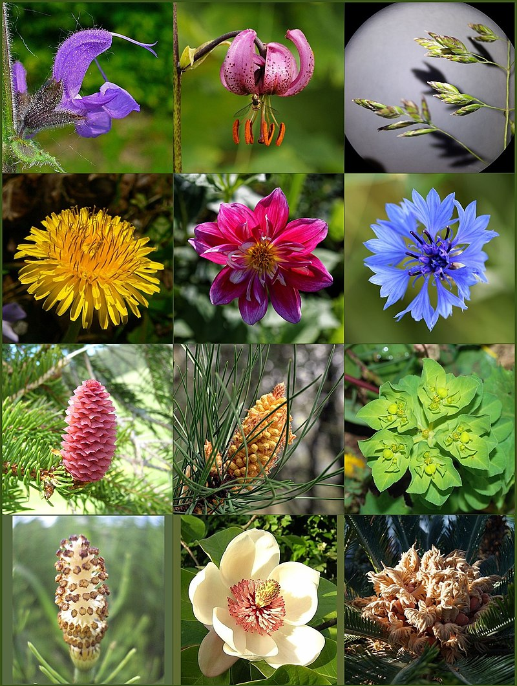
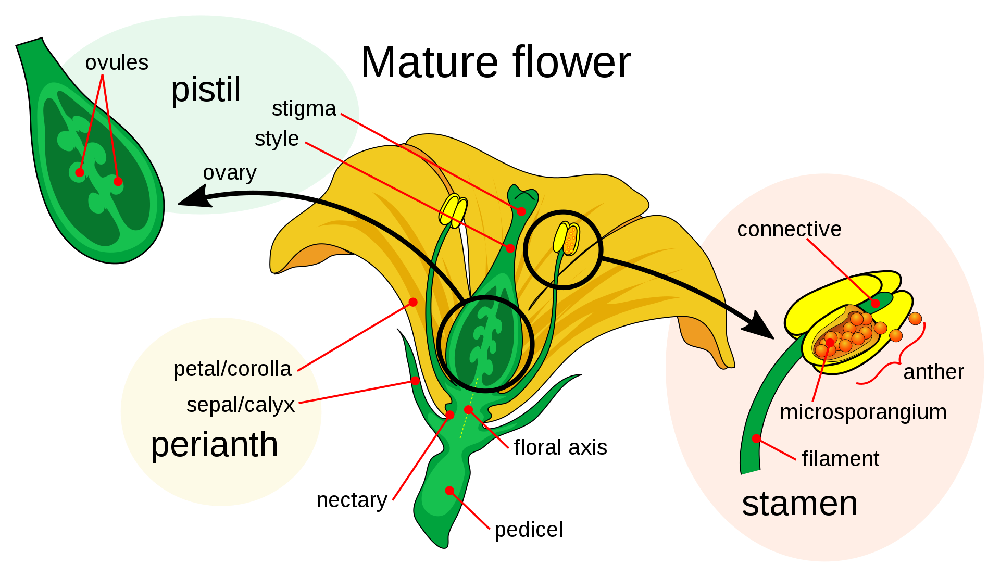
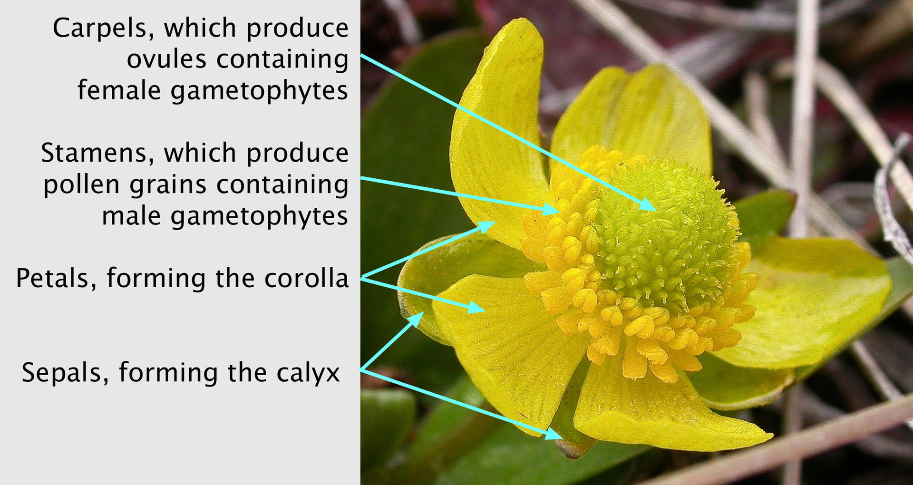

A flower, sometimes known as a bloom or blossom, is the reproductive structure found in flowering plants (plants of the division Magnoliophyta, also called angiosperms). The biological function of a flower is to facilitate reproduction, usually by providing a mechanism for the union of sperm with eggs. Flowers may facilitate outcrossing (fusion of sperm and eggs from different individuals in a population) resulting from cross-pollination or allow selfing (fusion of sperm and egg from the same flower) when self-pollination occurs.
The two types of pollination are: self-pollination and cross-pollination. Self-pollination happens when the pollen from the anther is deposited on the stigma of the same flower, or another flower on the same plant. Cross-pollination is the transfer of pollen from the anther of one flower to the stigma of another flower on a different individual of the same species. Self-pollination happens in flowers where the stamen and carpel mature at the same time, and are positioned so that the pollen can land on the flower's stigma. This pollination does not require an investment from the plant to provide nectar and pollen as food for pollinators.[1]
Some flowers produce diaspores without fertilization (parthenocarpy). Flowers contain sporangia and are the site where gametophytes develop. Many flowers have evolved to be attractive to animals, so as to cause them to be vectors for the transfer of pollen. After fertilization, the ovary of the flower develops into fruit containing seeds.
In addition to facilitating the reproduction of flowering plants, flowers have long been admired and used by humans to bring beauty to their environment, and also as objects of romance, ritual, esotericism, witchcraft, religion, medicine, and as a source of food.
Morphology
Parts
The flower has two essential parts: the vegetative part, consisting of petals and associated structures in the perianth, and the reproductive or sexual parts. A stereotypical flower consists of four kinds of structures attached to the tip of a short stalk. Each of these kinds of parts is arranged in a whorl on the receptacle. The four main whorls (starting from the base of the flower or lowest node and working upwards) are as follows:
Perianth
Reproductive
Structure
Although the arrangement described above is considered "typical", plant species show a wide variation in floral structure.[5] These modifications have significance in the evolution of flowering plants and are used extensively by botanists to establish relationships among plant species.
The four main parts of a flower are generally defined by their positions on the receptacle and not by their function. Many flowers lack some parts or parts that may be modified into other functions and/or look like what is typically another part. In some families, like Ranunculaceae, the petals are greatly reduced and in many species, the sepals are colorful and petal-like. Other flowers have modified stamens that are petal-like; the double flowers of Peonies and Roses are mostly petaloid stamens.[6] Flowers show great variation and plant scientists describe this variation in a systematic way to identify and distinguish species.
Specific terminology is used to describe flowers and their parts. Many flower parts are fused together; fused parts originating from the same whorl are connate, while fused parts originating from different whorls are adnate; parts that are not fused are free. When petals are fused into a tube or ring that falls away as a single unit, they are sympetalous (also called gamopetalous). Connate petals may have distinctive regions: the cylindrical base is the tube, the expanding region is the throat and the flaring outer region is the limb. A sympetalous flower, with bilateral symmetry with an upper and lower lip, is bilabiate. Flowers with connate petals or sepals may have various shaped corolla or calyx, including campanulate, funnelform, tubular, urceolate, salverform, or rotate.
Referring to "fusion," as it is commonly done, appears questionable because at least some of the processes involved may be non-fusion processes. For example, the addition of intercalary growth at or below the base of the primordia of floral appendages such as sepals, petals, stamens and carpels may lead to a common base that is not the result of fusion
Many flowers have some form of symmetry. When the perianth is bisected through the central axis from any point and symmetrical halves are produced, the flower is said to be actinomorphic or regular, e.g. rose or trillium. This is an example of radial symmetry. When flowers are bisected and produce only one line that produces symmetrical halves, the flower is said to be irregular or zygomorphic, e.g. snapdragon or most orchids.
Flowers may be directly attached to the plant at their base (sessile—the supporting stalk or stem is highly reduced or absent). The stem or stalk subtending a flower is called a peduncle. If a peduncle supports more than one flower, the stems connecting each flower to the main axis are called pedicels. The apex of a flowering stem forms a terminal swelling which is called the torus or receptacle
Inflorescence
In those species that have more than one flower on an axis, the collective cluster of flowers is termed an inflorescence. Some inflorescences are composed of many small flowers arranged in a formation that resembles a single flower. The common example of this is most members of the very large composite (Asteraceae) group. A single daisy or sunflower, for example, is not a flower but a flower head—an inflorescence composed of numerous flowers (or florets). An inflorescence may include specialized stems and modified leaves known as bracts.
Diagrams and formulae
A floral formula is a way to represent the structure of a flower using specific letters, numbers and symbols, presenting substantial information about the flower in a compact form. It can represent a taxon, usually giving ranges of the numbers of different organs, or particular species. Floral formulae have been developed in the early 19th century and their use has declined since. Prenner et al. (2010) devised an extension of the existing model to broaden the descriptive capability of the formula.[10] The format of floral formulae differs in different parts of the world, yet they convey the same information.